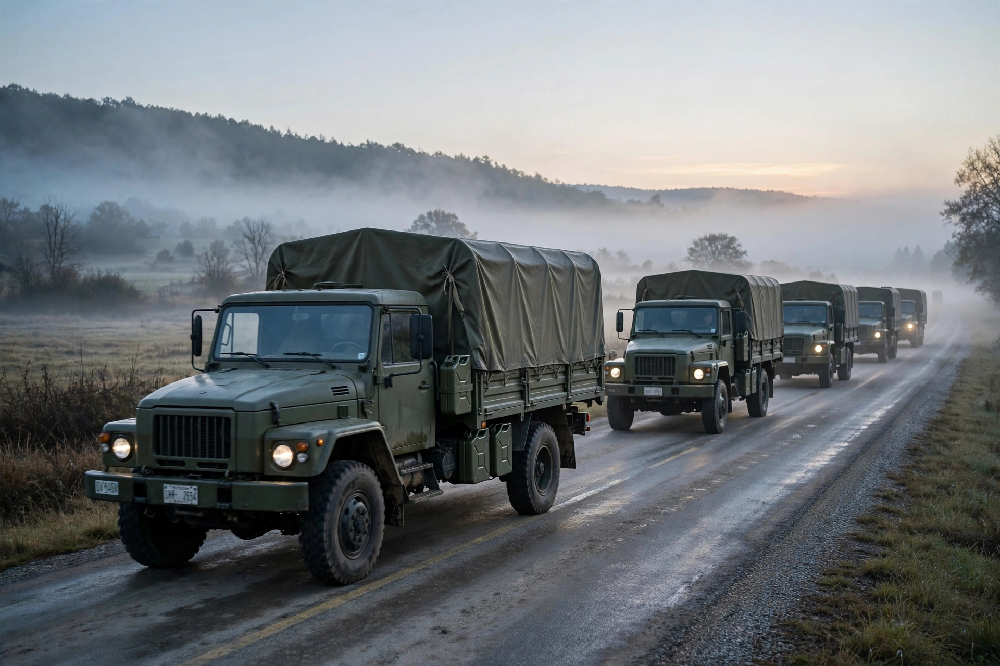

| Military logistics | |
|---|---|
 | |
| Scope | Supply, transport, maintenance, medical support |
| Levels | Strategic, operational, tactical |
Military logistics is the discipline of planning and carrying out the movement, supply, and maintenance of military forces. In its broadest sense it covers the design and development of equipment, the storage, movement, distribution, maintenance, and evacuation of materiel, the transport and hospitalisation of personnel, and the provision of services such as feeding, fuel, and ammunition. The aphorism "amateurs talk about tactics, professionals talk about logistics" is commonly attributed to this field's decisive importance.
Armies from antiquity depended on supply: Alexander the Great's campaigns were planned around grazing and grain, and Roman legions built roads and supply depots (horrea) across their empire. The word "logistics" entered military usage in the 19th century, notably through Antoine-Henri Jomini's writings on the art of war. In the 20th century, the world wars were shaped by industrial-scale logistics — railways, shipping, and airlift — culminating in feats such as the Allied supply effort after D-Day, the Berlin Airlift (1948–49), and the Red Ball Express. Modern logistics emphasises "just-in-time" delivery, containerisation, and information systems tracking supplies in transit.
NATO and US doctrine classify supplies into classes, including subsistence (Class I), general supplies (Class II), petroleum, oils and lubricants (Class III), construction materiel (Class IV), ammunition (Class V), and major end items such as vehicles (Class VII). Logistics operates at strategic (national), operational (theatre), and tactical (unit) levels.
Contemporary military logistics integrates civilian supply-chain management concepts, commercial carriers, pre-positioned stocks, and host-nation support. Failures of logistics have repeatedly constrained operations, from Napoleon's invasion of Russia to the supply difficulties of rapid armoured advances in the Second World War and beyond.
See also: Supply chain management; Sealift; Airlift; Quartermaster; Berlin Airlift.